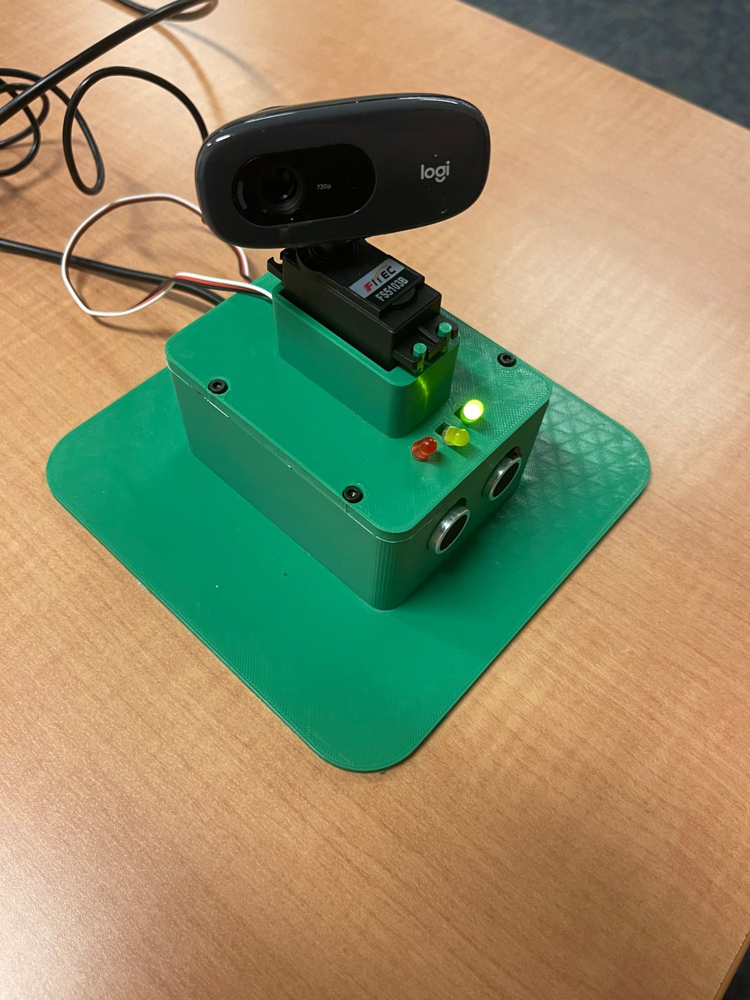
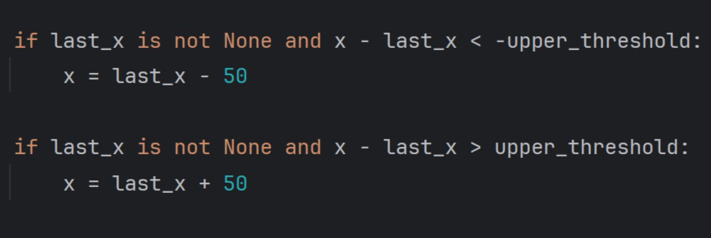
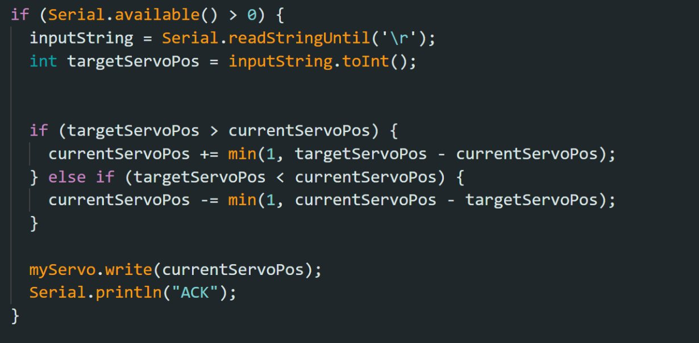

Mechatronic Tracking Camera


What is it?
I designed and constructed a face-detecting and following camera system. It follows one person in the camera’s frame and continuously points the camera at their face to keep them centered. The camera is mounted directly on top of a servo motor which moves according to the data received by the camera sensor. There is also an ultrasonic range finder that detects subject distance and indicates via LEDs if the person is too far to be detected. All the components are housed in a compact, 3D-printed enclosure, which connects directly to a laptop to display what the camera sees.
Video Demonstration at Vanderbilt Engineering Showcase

Smooth Motion
To allow the servo motor to move according to the subject and smoothly, I implemented thresholds for updating the coordinates of the face. This ensures that only movements exceeding a set x-position threshold are considered significant enough to tell the servo to update position. The threshold variable determines the sensitivity of the motion detection, and the upper threshold helps to dampen any sudden large movements. By comparing the current face position to the last known position (last_x and last_y), the code can determine whether the movement is within the defined limits.
Pyton <--> Arduino
The “send_coords_to_arduino” function enables communication between the Python script and the Arduino sketch. After calculating the mirrored x-coordinate (flipped_x) to align with the servo's movement direction, the function formats the coordinates into a string and sends it over the serial connection to the Arduino.
